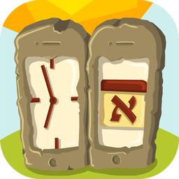

איי־קלוח™
בהמשך, לאייפון
אותו לוח, אותם זמני היום ואותם אירועים אישיים כמו בקלוח מק — באייפון.
מה האפליקציה עושה
- תצוגת חודש אזרחי וחודש עברי, היום ומעבר לשנה — עד שנת 3760 לפנה״ס, עם הלוח היוליאני שלפני המעבר ללוח הגרגוריאני.
- חגים ומועדים יהודיים, ישראליים ואזרחיים, פרשת השבוע ושבתות מיוחדות, לארץ ישראל או לחוץ לארץ.
- זמני היום לכל מיקום, לפי השיטות המובנות או לפי שיטה משלך, ואם רוצים — גם רבינו תם.
- אירועים אישיים — אזכרות, ימי הולדת, ימי נישואין ותאריכים חד־פעמיים — עם תזכורות, תאריך בר ובת מצווה ותאריך לועזי לפי הצורך.
- שיתוף אירועים עם המשפחה או עם בית הכנסת: בוחרים אילו אירועים לייצא לקובץ האירועים של קלוח, ואילו לייבא ממנו.
- התראות זמנים, לעולם לא בשבת וביום טוב.
- עברית ואנגלית. האירועים והמיקומים שלך זהים לאלה שבמק, דרך iCloud.
דרישות
אייפון עם iOS 17 ומעלה.
עזרה
אותה עזרה כלולה באפליקציה: בהגדרות › עזרה.